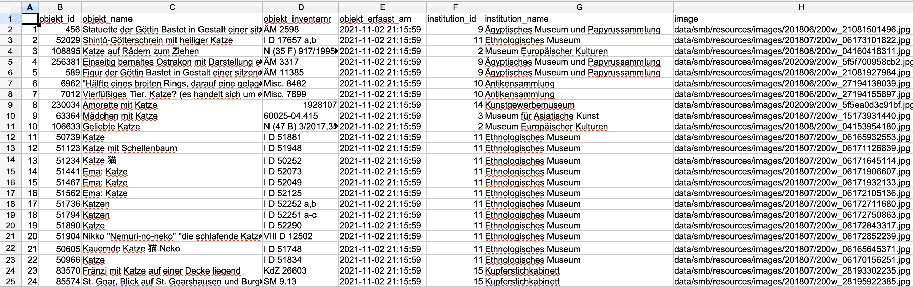

4 Datenerhebung und -aufbereitung
Jede Art von Forschung ist auf Daten angewiesen, seien sie mittels Personenbefragungen, medizinischer Messungen, Webscraping oder interpretierender Analysen von Texten erhoben. Auf Grundlage von Daten können Forschungsfragen beantwortet, Thesen aufgestellt, Behauptungen widerlegt, Narrative untermauert werden. Analysen, die sich mit einem kleinen Set von Quellen bzw. Daten befassen, präsentieren Ergebnisse dabei oft in Form von Synthesen, die sich aus einer vorangehenden Interpretation der zugrundeliegenden Dokumente ergeben. Über das Quellenverzeichnis und entsprechende Anmerkungen im Text wird die Grundlage nachvollziehbar; dass ein bestimmter Abschnitt, ein Satz oder ein Wort auf eine gewisse Weise ausgelegt werden, wird aber auch durch die jeweiligen Forscher:innen selbst beeinflusst – eine Literaturwissenschaftlerin beispielsweise, die über Männerfiguren bei Joanne K. Rowling promoviert hat, wird bei der Diskussion um deren mögliche Autorschaft von The Cuckoo’s Calling (siehe Kapitel 2.2) diesen Text anders lesen und andere Argumente dafür oder dagegen aufwerfen als ein langjähriger Harry-Potter-Fan mit viel Leseerfahrung, aber anderer bzw. weniger formaler Ausbildung. Beide werden fundierte Aussagen treffen und Begründungen geben können, ob und wieso The Cuckoo’s Calling von Rowling verfasst wurde oder nicht; beide werden auf ihre Erfahrung und gründliche Auseinandersetzung mit Rowlings Werk verweisen; und beide werden mit einzelnen Sätzen oder Passagen für eine Sichtweise argumentieren, die von einer dritten Person genau gegenteilig genutzt würde. Die Datengrundlage ist also dieselbe und nachvollziehbar, die Auswertung bzw. die Auswertungsstrategien hingegen sind es nicht mehr, und somit auch nicht die daraus gewonnenen Ergebnisse, die ja auch wieder Forschungsdaten darstellen.
Computergestützte Analysen haben den Anspruch, in allen Schritten nachvollziehbar zu sein und dadurch auch nachnutzbare Daten zu produzieren: Nicht nur die Quellengrundlage, also die Erhebung von Daten und die Erstellung eines Datensatzes, sondern auch alle Schritte von der Datenanreicherung und -verfeinerung über die genutzten Methoden bzw. Programme für die Auswertung bis hin zur Sicherung und Aufbewahrung sollen transparent, gut dokumentiert und nachvollziebar sein. Zum einen, um die Resultate und die darauf fußenden Aussagen belastbar zu machen; zum anderen, um die gewonnenen Daten zur weiteren Nutzung kostenfrei und offen verfügbar zu machen. Zu den Prinzipien, die bei der Arbeit mit Daten berücksichtigt werden sollten, geht es nochmals in Kapitel 5. An dieser Stelle geht es um die konkreten Arbeitsschritte bei der Datenerhebung und Datenaufbereitung, die in dh-Projekten häufig vorkommen.
4.1 Datenerhebung
Es gibt verschiedene Möglichkeiten, Daten für die historische Forschung zu erheben bzw. zu erstellen, von denen einige im Folgenden kurz angesprochen werden.
Für Zeiträume, in denen Quellen vergleichsweise knapp sind und keine seriellen Daten existieren, bietet sich die Digitalisierung von Texten und deren anschließende Analyse an. Digitalisierung beinhaltet dabei nicht nur die Transformation von einer physischen Quelle in ein digitales Bild, sondern auch die Anreicherung des Bilds mit Layout und Text: Erst durch eine Markierung von Bereichen, in denen Text vorkommt, ist es in einem zweiten Schritt möglich, diesen als solchen zu erkennen und damit maschinenlesbar und auswertbar zu machen. Eine solche Umwandlung vom Bild zum Text ist dabei sowohl für moderne Texte, die als Typoskript vorliegen, als auch für vormoderne Handschriften und Drucke möglich, in lateinischer ebenso wie in arabischer, chinesischer oder japanischer Schrift. Es gibt kostenpflichtige Programme wie den Abbyy FineReader, aber auch Open-Source-Tools mit und ohne Graphical User Interface (GUI). Weit verbreitet ist Transkribus, das viele Funktionalitäten bündelt; die Texterkennung ist ab einer gewissen Menge Seiten allerdings kostenpflichtig, wobei studentische Projekte auf Anfrage unterstützt werden können. Programme, die über die Kommandozeile laufenm gänzlich kostenfrei sind und ebenfalls zahlreiche Funktionalitäten bieten, sind beispielsweise Kraken, OCR4all, OCRopus oder Calamari.
Zur Extraktion von Daten aus digitalen/digitalisierten Texten existieren verschiedene Möglichkeiten mithilfe kleiner Kommandozeilenprogramme (eher mühsam und schwierig zu lesen) oder mit Packages für Programmiersprachen, für die Geisteswissenschaften vor allem R oder Python (siehe dazu auch Kapitel 2.2). So können besipielsweise aus digitalisierten Telefonbüchern Entitäten wie Personen, Straßennamen oder Berufe oder aus alten Theaterprogrammheften gespielte Stücke, beteiligte Schauspieler:innen und verantwortliche Regisseurinnen extrahiert und als Datensätze weitergenutzt werden.1
Der anfängliche Aufwand, der einer automatisierten Datenextraktion vorangeht und die steile Lernkurve mancher Programme können abschreckend wirken. Und wenn Sie nur ein Theaterprogramm detaillierter auswerten wollen, sind Sie sicher schneller, wenn Sie die entsprechenden Daten in eine Tabellensoftware abtippen. Wenn Sie aber einen größeren Quellenbestand zur Verfügung haben, der in sich ähnlich strukturiert ist, wie das bei Telefonbüchern oder Theaterprogrammheften der Fall sein dürfte, macht es kaum einen Unterschied mehr, ob Sie 10 oder 1000 Theaterprogramme analysieren möchten. Zudem können Sie Ihr erstelltes Skript, Ihr kleines Computerprogramm, anderen zur Verfügung stellen oder für ähnlich strukturierte Quellen in einem anderen Projekt nachnutzen.
Wenn Sie mit bereits digitalisierten Beständen aus öffentlichen Institutionen wie Galerien, Bibliotheken, Museen oder Archiven arbeiten wollen (sog. GLAMs: Galleries, Libraries, Archives, Museums), besteht oft die Möglichkeit, Daten über Schnittstellen herunterzuladen.2 Solche APIs (Application programming interface) ermöglichen eine Kommunikation zwischen zwei Computern, ohne dass hierfür der Umweg über ein egraphische Oberfläche nötig ist. Anstatt also beispielsweise über die Suchmaske der Staatlichen Museen zu Berlin nach Objekten oder Dokumenten mithilfe verschiedener Schlagwörter zu suchen und die Ergebnisse dann einzeln herunterzuladen, kann Ihr Computer mit der Schnittstelle des Museums direkt kommunizieren und mit einfachen Befehlen ganze Ergebnislisten zur Weiterarbeit herunterladen. Für solche Abfragen können ein Kommandozeilenprogramm oder Programmiersprachen genutzt werden, die Abfrage besteht dabei im Wesentlichen aus einer Zeile, wie hier in der Programmiersprache R:
library(jsonlite)
cats <- fromJSON("https://smb.museum-digital.de/json/objects?&s=katze")
Sie können R hier herunterladen. Wenn Sie das Programm öffnen, müssen Sie dort zuerst das Paket
jsonliteinstallieren:install.packages("jsonlite")Mit “Enter” wird das Paket installiert. Dann können Sie die zwei Zeilen oben eintippen und ebenfalls mit “Enter” ausführen. Die Ergebnisse Ihrer Suche können Sie sich mitcats+ “Enter” anzeigen lassen
Das Ergebnis der Suchanfrage nach “katze” wird in der Variable cats gespeichert, und diese kann zur Weiterarbeit in ein Tabellenformat exportiert werden:
write.csv(cats, "docs/cats_smb.csv")
Die Funktion write.csv speichert den Inhalt der Variable cats als csv-Datei3 unter dem Dateipfad “docs/cats_smb.csv” auf der Festplatte.

Wenn Webseiten keine Schnittstellen zur Verfügung stellen, besteht die Möglichkeit, mit Web Scraping an gewünschte Daten zu kommen. Je nach Webseite bzw. Inhalten ist die Rechtslage allerdings nicht ganz klar. Zum Download von Webseiten mit der Programmiersprache Python von William J. Turkel und Adam Crymble gibt es eine Lektion im Programming Historian. Ein weiteres Tutorial zur Datenakquise, von Zach Coble, Liz Rodrigues, Erin Pappas, Chelcie Rowell, und Yasmeen Shorish, findet sich hier.
4.2 Datenaufbereitung4
Bei der Arbeit mit Datensätzen, seien sie selbst erhoben oder von Dritten übernommen, ist es häufig der Fall, dass Informationen fehlen oder uneinheitlich erhoben wurden, was eine spätere Analyse erschwert.
Wenn in einer Umfrage unter Studierenden das Studienfach mit aufgenommen wurde, ohne zuvor Werte für diese Kategorie zu definieren, finden sich für “Geschichte” und “Deutsch” vielleicht auch folgende Varianten: “Gesch.”, “Geschichtswissenschaft”, “Geschichtswissenschaften”, “Geschihcte”, “Germanistik”, “Dt.”, “Germ.”. Anstatt zwei Werten für zwei Studienfächer gibt es neun – ohne, dass sich das Fächerspektrum erweitert hätte. Im besten Fall werden solche Varianten schon bei der Erhebung der Daten vermieden, indem eine feste Liste an Werten erstellt wird. Erhält man jedoch einen Datensatz mit verschiedenen Varianten für ein und denselben Wert, muss man diese zusammenführen, um eine saubere Datengrundlage zu erhalten. Sie können entweder mit Strg-R versuchen, verschiedene Schreibweisen zu finden und zu ersetzen; in Tabellenprogrammen wie Excel, Open Office oder Google Sheets können Sie sich einzigartige Werte einzelner Spalten anzeigen lassen und zusammengehörende Varianten zu einem Grundwert zusammenführen; am hilfreichsten und recht voraussetzungslos zu bedienen und dabei auch für große Datensätze nutzbar ist die Software OpenRefine, mit der Sie Daten extrahieren,5 säubern/vereinheitlichen6 und anreichern7 können.
4.3 Datenanalyse
Wenn Sie einen Datensatz zur Analyse zur Verfügung haben, aus selbst erhobenen Daten oder durch Nachnutzung eines vorhandenen, und für Ihre Zwecke aufbereitet haben, folgt (endlich) auch die Analyse. Welche Software oder Methoden Sie verwenden, hängt dabei nicht nur von der Art und Menge der Daten, sondern auch dem Datenformat und vor allem auch Ihrer Forschungsfrage ab. Wenn Sie eine Personendatenbank haben, in der Briefschreiber:innen und Empfänger:innen aufgenommen sind und der Wohnort der Personen bekannt ist, Sie es jedoch versäumt haben, die Daten der Einzelbriefe zu verzeichnen, können Sie nur eine räumliche Verteilung, keine raum-zeitliche Entwicklung eines Briefschreiber:innennetzwerks darstellen.8 Wenn Sie aber nur an der örtlichen Verteilung weiblicher und männlicher Verfasser:innen interessiert sind und die zeitliche Komponente für Sie keine Rolle spielt, erübrigt sich auch ein raum-zeitliche Analyse. Bevor Sie sich also für eine Methode entscheiden, sollten Sie sich fragen, zu welchem Zweck Sie Ihren Datensatz nutzen wollen und welche Frage(n) er beantworten soll.
In einem nächsten Schritt sollte über die konkrete Art der Analyse nachgedacht werden, die mit den vorhandenen Daten möglich ist. Unter den zahlreichen Möglichkeiten für die Arbeit mit strukturellen Daten sind für die Geschichtswissenschaften u.a. die Netzwerkanalyse oder die Regressionsanalyse häufig genutzte Methoden. Für textuelle Daten bieten sich ebenfalls verschiedene Arten der Analyse an, darunter beispielsweise Auszählungen von Worthäufigkeiten als Teil der Stylometrie/Zuschreibung von Autor:innenschaft (siehe Kapitel 2.2), Topic Modelling als statistische Methode zur Identifizierung wiederkehrender Themen in größeren Textbeständen, oder Sentiment Analyse, um Stimmungen, Gefühle, Bewertungen aus Textpassagen zu extrahieren. Wenn Sie über georeferenzierte Daten verfügen, können Sie verschiedene Analysen mithilfe von GIS (Geographic Information System) durchführen und visualisieren.
Ob Sie für Topic Modelling ein eigenes Skript schreiben oder vorhandene Software nutzen, ob Sie Regressionsanalysen selbst durchführen oder auf Webseiten durchführen lassen, ist dabei Ihre Entscheidung; oftmals ist das Nutzen vorhandener Webangebote für erste kurze Analysen sinnvoll, um zu überlegen, ob die vorgesehene Methode sinnvolle Ergebnisse zu liefern verspricht. Für größere Projekte, in denen komplexere Analysen über einen längeren Zeitraum durchgeführt werden sollen, bietet sich die Arbeit mit Programmiersprachen schon allein deswegen an, weil so ein sehr hohes Maß an Anpassungen von vorhandenen Funktionen für die eigenen Zwecke und die völlige Kontrolle über die eigenen Daten ermöglicht wird. Eine Auflistung häufig genutzter Tools für die historische Arbeit findet sich in Kapitel B.3.
4.4 Datensicherung
dokumentieren
Wie wurden die Daten erhoben?
Wie wurden die Daten annotiert?
In welchem Format sind die Daten vorhanden?
Welche Software wurde benutzt?
Was stellen die Daten dar?Siehe auch Kapitel 5 zu Fragen von nachhaltiger Speicherung.
Ein gut nachvollziehbares Tutorial zur Extraktion von Daten aus Telefonbüchern hat Lindsey Wieck für einen dh-Kurs an der St. Mary’s University in San Antonio erstellt: https://lindseywieck.com/fall_2016_sf/gatheringdatatutorial.html. Derek Miller arbeitet zu Broadway-Vorstellungen, Visualizing Broadway, ein Projekt, das hier beschrieben wird; hier gibt es dazu ein Video in Vorlesungslänge.↩︎
Unter openglam.ch finden sich Informationen zu Schweizer GLAM-Einrichtungen, die offene Daten anbieten.↩︎
comma separated value ist ein Format, in dem einzelne Werte, values, über spezifische Trenner, meist Kommas, eindeutig abgrenzbar sind und somit in einem Tabellenformat angezeigt werden können, wobei jeder Wert in einer separaten Zelle steht.↩︎
Eine häufige Aussage ist, zur Datenvorbereitung/Preprocessing würde 80% der Arbeitszeit verwendet, zur Analyse und Interpretation blieben nur 20%. In einem Blogartikel von 2020 geht Leigh Dodds diesen Zahlen nach.↩︎
Evan Peter Williamson: Fetching and Parsing Data from the Web with OpenRefine, Programming Historian 6 (2017), https://doi.org/10.46430/phen0065.↩︎
Seth van Hooland, Ruben Verborgh, Max De Wilde: Cleaning Data with OpenRefine, Programming Historian 2 (2013), https://doi.org/10.46430/phen0023.↩︎
Karen Li-Lun Hwang: Enriching Reconciled Data with OpenRefine, The Bytegeist Blog 2018, https://medium.com/the-bytegeist-blog/enriching-reconciled-data-with-openrefine-89b885dcadbb↩︎
Ein Großprojekt an der Universität Stanford, Mapping the Republic of Letters, hat für das 18. Jahrhundert das Briefnetzwerk europäischer Gelehrter modelliert. Ein Fallbeispiel ist das Netzwerk Voltaires, in verschiedenen Visualisierungen: http://republicofletters.stanford.edu/publications/voltaire/letters/. Dan Edelstein. Interactive Visualization for Voltaire’s Correspondence Network. Letters in Voltaire’s Network [Created using Palladio, http://hdlab.stanford.edu/palladio].↩︎